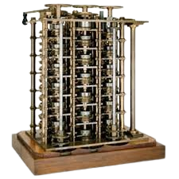

Máquina Analítica de Babbage
Nos anos de 1833 e 1834, pensou-se em uma forma de ampliar as potencialidades das máquinas da época e projetou-se, então, a máquina analítica (Analytical Engine). Esse novo dispositivo foi projetado para ser automático, controlado por um programa e com suporte digital – praticamente o nosso computador moderno. Seu uso era geral e poderia realizar qualquer tipo de cálculo com uma ampla variedade de números com o objetivo de resolver problemas complexos. A máquina foi projetada para ser dividida em quatro componentes: o moinho, o armazém (store – local onde a informação ficaria guardada digitalmente), o leitor e a impressora, que são hoje os componentes dos computadores atuais. O moinho correspondia a unidade de cálculo, semelhante à CPU (Central Processing Unit – Unidade Central de Processamento), o armazém era o local onde os dados eram armazenados antes do processamento e o leitor e a impressora eram os dispositivos de entrada e saída respectivamente (input e output). O aparelho deveria ser movido a vapor e comandado por um assistente. Além de ser o precursor do computador digital, Babbage também contribuiu para o estabelecimento do sistema postal na Inglaterra e compilou as primeiras tabelas atuariais confiáveis, isto é, as tabelas que fazem uma estimativa de vida de determinado grupo social. Também criou um tipo de velocímetro e o piloto de locomotiva, o cowcatcher (“apanhador de vacas”), um dispositivo que fica na frente do trem para limpar a via e evitar que saia dos trilhos.
  |
 |
 |